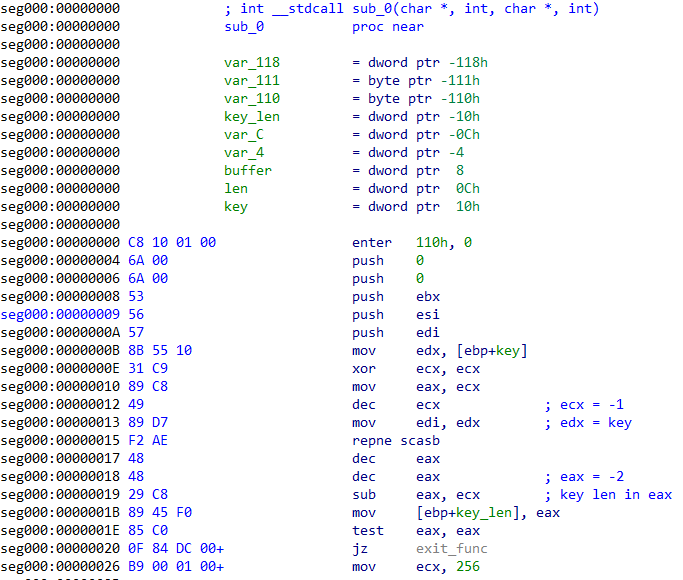

This document illustrates the methodology followed to solve the 11 levels that constitute the 2015 edition of the Flare Challenge.
Since the end of the contest, a few other write-ups were published on the Internet:
The binaries are still provided by the Flare team at http://flare-on.com/files/2015_FLAREOn_Challenges.zip
Level 1
The first level of the challenge requires to examine a file named i_am_happy_you_are_to_playing_the_flareon_challenge.exe.
When started, the program asks for a password and will print You are failure, as shown below:
C:\temp>i_am_happy_you_are_to_playing_the_flareon_challenge.exe
Let's start out easy
Enter the password> hello_flare
You are failureUsing IDA, it is possible to decompile the code from the entry point:
BOOL start()
{
HANDLE v0; // ST18_4@1
int v1; // ecx@1
HANDLE hFile; // [sp+8h] [bp-8h]@1
DWORD NumberOfBytesWritten; // [sp+Ch] [bp-4h]@1
v0 = GetStdHandle(0xFFFFFFF6);
hFile = GetStdHandle(0xFFFFFFF5);
WriteFile(hFile, aLetSStartOutEa, 0x2Au, &NumberOfBytesWritten, 0);
ReadFile(v0, byte_402158, 0x32u, &NumberOfBytesWritten, 0);
v1 = 0;
while ( ((unsigned __int8)byte_402158[v1] ^ 0x7D) == byte_402140[v1] )
{
if ( ++v1 >= 24 )
return WriteFile(hFile, aYouAreSuccess, 0x12u, &NumberOfBytesWritten, 0);
}
return WriteFile(hFile, aYouAreFailure, 0x12u, &NumberOfBytesWritten, 0);
}The input string is stored at address 0x402158 and each byte is compared to a byte array at address 0x402140,
after being xor-ed with the value 0x7d.
The ruby script below can be used to read the 0x18 bytes at address 0x402140 (offset 0x540 in the file),
to apply a xor operation on each byte with the value 0x7d and then return the expected string.
#!/usr/bin/env ruby
OFFSET = 0x540
COUNT = 0x18
f = File.open("i_am_happy_you_are_to_playing_the_flareon_challenge.exe", "rb")
f.seek(OFFSET, IO::SEEK_CUR)
p f.read(COUNT).unpack('C*').map {|x| x ^ 0x7d}.pack('C*')
f.closeBy running this script, we can obtain the validation email for the first level:
C:\temp>ruby solve_01.rb
"bunny_sl0pe@flare-on.com"Level 2
This level requires to analyze the provided program, very_success.exe. At first,
it looks quite similar to the previous level: when started, it asks for a password
and then prints the same message.
C:\temp>very_success.exe
You crushed that last one! Let's up the game.
Enter the password> AAAAA
You are failureAs shown below, the entry point starts by calling the function at address 0x401000:
Interestingly, this function pops the return address from the stack, which is equal to 0x4010E4,
and stores it in a local variable (renamed ref_data in IDA) :
The rest of the function prints a bunch of string on the standard output, reads at most 50 bytes
from the standard input and calls the function at address 0x401084 :
This function takes three arguments: the return address from function 0x401000, the string
read from the standard input and the number of bytes read. This last value is compared to 0x25: if equal, the execution continues at
address 0x401098, otherwise the function returns 0.
The function then starts a loop, reading each byte from the input, applying a certain operation on it and then
comparing the result with the data referenced by ref_data, starting from the end.
The comparison is :
input_string[i] ^ 0xC7 + ROL(1, bx & 3) + 1 == ref_data[0x25 - 1 - i]As this is clearly reversible, it is possible to obtain the expected string by
applying the reverse operation on the data referenced at address 0x4010E4, using
the Ruby script below:
#!/usr/bin/env ruby
OFFSET = 0x2E4 # ref_data
input = "very_success.exe"
f= File.open(input, "rb")
f.seek(OFFSET)
data = f.read(0x25).unpack('C*')
f.close
bx = 0
res = []
data.reverse.each do |b|
shift = bx & 0x3
c = (b - (1 + (1 << shift))) ^ 0xc7
res << c
bx += b
end
p res.pack('C*')Executing the script returns the validation email address for this level:
C:\temp>ruby solve_02.rb
"a_Little_b1t_harder_plez@flare-on.com"Level 3
The next file to analyze, elfie.exe, is quite heavy, weighing around 12MB.
When executed, the program will only display the picture below:
It can take a while to figure out what to do: opening the binary in a disassembler and performing a top-down analysis from the entry point is not a very good idea because of the vast quantity of code.
When examining the strings contained in the program, many references to Python libraries can be found:
$ strings elfie.exe
[...]
zout00-PYZ.pyz
mpyi_os_path
mpyi_archive
mpyi_importers
s_pyi_bootstrap
spyi_carchive
bMicrosoft.VC90.CRT.manifest
bmsvcr90.dll
bmsvcp90.dll
bmsvcm90.dll
bpython27.dll
bselect.pyd
bunicodedata.pyd
bPySide.QtCore.pyd
b_hashlib.pyd
bbz2.pyd
b_ssl.pyd
bPySide.QtGui.pyd
b_socket.pyd
bpyside-python2.7.dll
bshiboken-python2.7.dll
bQtCore4.dll
bQtGui4.dll
belfie.exe.manifest
python27.dll
[...]At this point, you can google a few strings to figure out what is going on, but long story short, this program was built using the PyInstaller tool which is used to embed all the dependencies required to run a Python script into a big binary file.
These dependencies can be extracted using http://sourceforge.net/projects/pyinstallerextractor/ :
C:\temp>c:\Python27\python.exe pyinstxtractor.py elfie.exe
Successfully extracted Pyinstaller archive : elfie.exe
Now use Easy Python Decompiler v1.1 to decompile the pyc files
Choose Uncompyle2 as the decompiler engine as the other engine
is unstable and can crash although it is very fast.Among the extracted resources, the elfie file looks interesting: it is a large obfuscated
Python script (4MB, over 57K lines) which looks as shown below:
O0OO0OO00000OOOO0OOOOO0O00O0O0O0 = 'IRGppV0FJM3BRRlNwWGhNNG'
OO0O0O00OO00OOOOOO0O0O0OOO0OOO0O = 'UczRkNZZ0JVRHJjbnRJUWlJV3FRTkpo'
[...]
O00OO00OOO0OOOO0OOOO0OO00000OOO0 += 'aTBTMXd3OC8yY0ZqdzBIU0JMT0tEcktGckJUTkpvRGw2d'
O00OO00OOO0OOOO0OOOO0OO00000OOO0 += 'nNocTB'
import base64
exec(base64.b64decode(OOO0OOOOOOOO0000O000O00O0OOOO00O + O0O00OO0OO00OO00OO00O000OOO0O000 + [...] + O00OOOOO000O00O0O00000OOO0000OOO + O0O0OOO000O000OO0O0O0OOOOO0OO000))Obtaining the decoded Python instructions to will be executed only requires
the exec call to be replaced by print and that the standard output be redirected to a new file:
C:\temp>c:\Python27\python.exe elfie > elfie-decoded.pyThe resulting Python file is still obfuscated, but a method at line 13 looks interesting:
def O000OOOOOO0OOOO00000OO0O0O000OO0(self):
O0O0O0000OOO000O00000OOO000OO000 = getattr(self, 'txeTnialPot'[::-1])()
if (O0O0O0000OOO000O00000OOO000OO000 == ''.join((OO00O00OOOO00OO000O00OO0OOOO0000 for OO00O00OOOO00OO000O00OO0OOOO0000 in reversed('moc.no-eralf@OOOOY.sev0000L.eiflE')))):
self.OO0O0O0O0OO0OO00000OO00O0O0000O0.setWindowTitle('!sseccus taerg'[::-1])
self.OOOOOOOOOO0O0OOOOO000OO000OO0O00 = True
self.OO0O0O0O0OO0OO00000OO00O0O0000O0.setVisible(False)
self.OO0O0O0O0OO0OO00000OO00O0O0000O0.setVisible(True)The validation email is present in the source code of the script, in a reversed form. Once reversed, the correct email address appears:
irb(main):001:0> 'moc.no-eralf@OOOOY.sev0000L.eiflE'.reverse
=> "Elfie.L0000ves.YOOOO@flare-on.com"Level 4
The provided file, youPecks, can be opened in PeID for identification:
According to PeID, the binary seems packed with UPX.
Running the program only prints 2 + 2 = 4, as illustrated below:
C:\temp>youPecks.exe
2 + 2 = 4However, after unpacking the binary with upx, the resulting program seems to
behave differently:
C:\temp>upx.exe -d -o youPecks-upx.exe youPecks.exe
Ultimate Packer for eXecutables
Copyright (C) 1996 - 2013
UPX 3.91w Markus Oberhumer, Laszlo Molnar & John Reiser Sep 30th 2013
File size Ratio Format Name
-------------------- ------ ----------- -----------
25088 <- 12800 51.02% win32/pe youPecks-upx.exe
Unpacked 1 file.
C:\temp>youPecks-upx.exe
2 + 2 = 5This time, the program prints 2 + 2 = 5 which, obviously, is wrong. Something
seems fishy here. When opening the file in IDA, a reference to byte 5 can be found
near the string 2 + 2.
At this point, it can be assumed that the upx stub in the original youPecks.exe
is patching the data section during the unpacking process, whereas the upx tool
is still using the standard decompression algorithm.
A manual unpacking can be attempted at this point. Before doing so, it is a good precaution
to disable ASLR, to ensure that the sections are mapped at the same base address
during each execution. This can be achieved using the tool setdllcharacteristics provided
by Didier Stevens.
C:\temp>setdllcharacteristics.exe -d youPecks.exe
Original DLLCHARACTERISTICS = 0x8140
DYNAMIC_BASE = 1
NX_COMPAT = 1
FORCE_INTEGRITY = 0
Updated DLLCHARACTERISTICS = 0x8100
DYNAMIC_BASE = 0
NX_COMPAT = 1
FORCE_INTEGRITY = 0The program is then debugged through OllyDbg, a breakpoint being set just before the
jump to the original entry point (first unconditional jump after the popad instruction).
The unpacked sections are then dumped to a file using the plugin ollydump :
Finally, LordPE is used to rebuild the import table :
The resulting program can be run to print the string 2 + 2 = 4 :
C:\temp>youPecks-unpacked.exe
2 + 2 = 4It is then possible to open the binary in IDA for analysis. First, we can check
that the value 4 is present in the data section:
The assembly can then be analyzed, starting from the entry point. Interesting code
can be found at location 0x401560: the first argument of the program is converted
to an integer and a MD5 digest is computed from this value. Additionally, the current
hour is obtained through a call to _localtime64_s and then stored in the edi
register.
Further down, an index is computed from the value contained in edi and a string
is referenced using said index. The string content is then decoded from base64.
Next, each byte of the data decoded from base64 (md5_ref in the screenshot below)
is compared to the MD5 digest calculated from the first argument.
As the digest is computed on a single byte, it is possible
to find the expected value for argv[1] by computing every digest from 0 to 255
and then look for the digest corresponding to md5_ref:
irb(main):008:0> (0..255).to_a.map {|x| [x, Digest::MD5.hexdigest([ x ].pack('C*'))]}.select {|x| x[1] =~ /47ed73/}
=> [[17, "47ed733b8d10be225eceba344d533586"]]To avoid a premature exit, the first argument of the program must be 17. When
debugging the program, it has been observed that this value matches the current
hour obtained with the call to _localtime64_s. To summarize, the program must be
ran with the current hour as first argument.
As there is only one call to the function responsible for calculating a MD5 digest, we can only assume at this point that the digest for every hour is precomputed and stored in base64. For example, for value 17, we expect to find a string corresponding to :
irb(main):004:0> Base64.encode64(Digest::MD5.digest([17].pack('C')))
=> "R+1zO40QviJezro0TVM1hg==\nThe same exact string cannot be found but a similar string with upper/lowercase swapped is present in the binary:
This can be explained by looking at the function responsible for base64 decoding. The string used as alphabet is not in the regular order (uppercase before lowercase letters), as shown below:
Continuing the analysis, another base64 string is decoded (referenced by the local variable ciphertext
in the screenshot below) and a loop is executed to apply a xor operation on each byte of the
decoded data.
The result can be observed when debugging the program:
Finally, these operations can be reproduced by the Ruby script below:
#!/usr/bin/env ruby
require 'base64'
START_OFFSET = 0x5260
END_OFFSET = 0x585F
f = File.open(ARGV.shift, "rb")
f.seek START_OFFSET
data = f.read(END_OFFSET - START_OFFSET + 1)
f.close
b64_strings = data.split("\x00\x00\x00\x00")
s1 = b64_strings[0]
s2 = b64_strings[24]
key = Base64.decode64(s1.swapcase).bytes
cipher = Base64.decode64(s2.swapcase).bytes
puts cipher.map.with_index {|b, i| b ^ key[i % 16]}.pack('C*')The complete validation email can be obtained by running the script:
$ ./solve_04.rb youPecks-ollydump_.exe
Uhr1thm3tic@flare-on.comLevel 5
The archive for this level provides two files: challenge.cap, a network capture
file, and sender which is a win32 portable executable.
The capture file contains twelve HTTP POST requests, each one transmitting 4 bytes
corresponding to 4 printable characters (UDYs in the screenshot below).
To understand the meaning of these 4 characters, it is necessary to disassemble the provided binary.
The main function only calls another function, sub_821100 :
IDA does a pretty good job at decompiling this function, as shown below:
signed int sub_821100()
{
HANDLE v0; // esi@1
DWORD bytes_count; // esi@3
unsigned int v3; // ecx@5
unsigned int total_size; // edi@7
char *dest_buffer; // ebx@7
unsigned int count; // esi@8
DWORD NumberOfBytesRead; // [sp+4h] [bp-80008h]@1
unsigned __int8 key_data[524288]; // [sp+8h] [bp-80004h]@3
NumberOfBytesRead = 0;
v0 = CreateFileA("key.txt", GENERIC_READ, 0, 0, 3u, 0x80u, 0);
ReadFile(v0, key_data, 0x80000u, &NumberOfBytesRead, 0);
CloseHandle(v0);
bytes_count = NumberOfBytesRead;
sub_821250((char *)key_data, NumberOfBytesRead);
if ( bytes_count % 3 )
v3 = 3 * (bytes_count / 3) - bytes_count + 3;
else
v3 = 0;
total_size = 4 * ((bytes_count + v3) / 3);
dest_buffer = (char *)sub_821427(1, total_size + 1);
sub_8212A0(bytes_count, key_data, dest_buffer, total_size);
count = 0;
while ( sub_821000(&dest_buffer[count], count) ) {
count += 4;
if ( count >= total_size )
return 1;
}
return 0;
}Four functions then need to be analyzed to understand the whole program: sub_821250,
sub_821427, sub_8212A0 and sub_821000.
The function sub_821250 can be decompiled to the C code below:
void __fastcall sub_821250(char *a1, unsigned int a2)
{
unsigned int v2; // esi@1
v2 = 0;
if ( a2 )
{
do
{
a1[v2] += aFlarebearstare[v2 % 14];
++v2;
}
while ( v2 < a2 );
}
}It takes a string as input and will add the corresponding byte in the string "flarebearstare" to each byte in the input string.
The function sub_821427 is used to allocate the specified amount of memory.
The function sub_8212A0 implements a base64 encoding function. The encoding
alphabet is constructed by storing 4 different 128 bits integers on the stack,
using SSE instructions. As with the previous level, the alphabet used for encoding
is different than the regular base64 alphabet: lowercase letters have been swapped
with the uppercase letters.
Finally, the function sub_821000 is decompiled by IDA as below (without the error handling code) :
signed int __usercall sub_821000@<eax>(void *a1@<ecx>, char a2@<sil>)
{
void *v2; // eax@1
void *v3; // edi@1
signed int result; // eax@2
void *v5; // eax@3
void *v6; // ebx@3
void *v7; // eax@5
void *v8; // esi@5
LPVOID lpOptional; // [sp+4h] [bp-4h]@1
lpOptional = a1;
v2 = InternetOpenA("Mozilla/5.0 (Windows NT 6.1; WOW64) KEY", 0, 0, 0, 0);
v3 = v2;
v5 = InternetConnectA(v2, "localhost", 0x50u, 0, 0, 3u, 0, 1u);
v6 = v5;
v7 = HttpOpenRequestA(v5, "POST", "/", 0, 0, 0, 0, 1u);
v8 = v7;
HttpSendRequestA(v7, 0, 0, lpOptional, 4u);
InternetCloseHandle(v8);
InternetCloseHandle(v6);
InternetCloseHandle(v3);
result = 1;
return result;
}In a nutshell, the following steps are executed by the program:
-
the content of the file
key.txtis read -
this data read previously is mixed with the string
flarebearstare -
a new buffer is allocated to store the data encoded in base64, with the case swapped
-
finally, the base64 encoded string is sent via HTTP POST requests, 4 bytes at a time
As the base64 encoding and the mixing operation with the string flarebearstare are reversible
, it is then possible to extract the payloads from the network capture file
and obtain the content of the original key.txt file.
The Ruby script below implements these manipulations:
require 'base64'
FLARE_BEAR_STARE = "flarebearstare".unpack('C*')
s = "55:44:59:73" +
"31:44:37:62" +
"4e:6d:64:45" +
"31:6f:33:67" +
"35:6d:73:31" +
"56:36:52:72" +
"59:43:56:76" +
"4f:44:4a:46" +
"31:44:70:78" +
"4b:54:78:41" +
"4a:39:78:75" +
"5a:57:3d:3d"
s = s.gsub(':', '').scan(/../).map {|x| x.to_i(16)}
s = s.pack('C*').swapcase
t = Base64.decode64(s)
t = t.unpack('C*')
v = []
t.size.times do |i|
v << (t[i] - FLARE_BEAR_STARE[i % 14])
end
p v.pack('C*')Running this script returns the validation email for this level:
C:\temp>ruby solve_05.rb
"Sp1cy_7_layer_OSI_dip@flare-on.com"Level 6
Solving the level 6 requires the analysis of an android application, android.apk.
When started through an emulator, the application asks for a string to validate:
The content of the application can simply be extracted using unzip:
$ unzip android.apk
inflating: AndroidManifest.xml
inflating: res/anim/abc_fade_in.xml
inflating: res/anim/abc_fade_out.xml
inflating: res/anim/abc_grow_fade_in_from_bottom.xml
[...]
extracting: resources.arsc
inflating: classes.dex
inflating: lib/armeabi/libvalidate.so
inflating: META-INF/MANIFEST.MF
inflating: META-INF/CERT.SF
inflating: META-INF/CERT.RSATwo files are particularly interesting: classes.dex and libvalidate.so.
The first one can be converted to a JAR file using dex2jar :
$ ./d2j-dex2jar.sh -o ../classes.jar ../classes.dex
dex2jar ../classes.dex -> ../classes.jarThe result can be decompiled with jd-gui and the string entered through the application
seems to be checked against the validate method which is implemented in a
native library, libvalidate.so:
This library exports a few symbols, especially the function Java_com_flareon_flare_Va:
$ readelf -s ./lib/armeabi/libvalidate.so
Symbol table '.dynsym' contains 65 entries:
Num: Value Size Type Bind Vis Ndx Name
0: 00000000 0 NOTYPE LOCAL DEFAULT UND
1: 00000000 0 FUNC GLOBAL DEFAULT UND __cxa_finalize
2: 00000000 0 FUNC GLOBAL DEFAULT UND __cxa_atexit
3: 00000fd1 0 FUNC GLOBAL DEFAULT 8 __aeabi_uidiv
4: 00001051 18 FUNC GLOBAL DEFAULT 8 __aeabi_uidivmod
5: 00000e65 364 FUNC GLOBAL DEFAULT 8 Java_com_flareon_flare_Va
6: 00000000 0 FUNC GLOBAL DEFAULT UND memset
7: 00000000 0 FUNC GLOBAL DEFAULT UND memcpy
8: 00000000 0 FUNC GLOBAL DEFAULT UND strle
[...]This function can be debugged remotely using IDA by pushing
the android_server binary on the smartphone and starting it.
$ adb push $HOME/ida/dbgsrv/android_server /data/local/tmp
$ adb shell
# su -
# cd /data/local/tmp
# chmod 755 android_server
# ls -al
-rw-rw-rw- root root 1078129 2015-07-27 09:40 android.apk
-rwxr-xr-x root root 523480 2015-04-28 15:17 android_server
# ./android_server
IDA Android 32-bit remote debug server(ST) v1.17. Hex-Rays (c) 2004-2014
Listening on port #23946...Once done, a TCP port forward must be set up with adb.
$ ./adb forward tcp:23946 tcp:23946Finally, the debugger can attach itself to the process corresponding to the Flare application:
A breakpoint must then be set up at the beginning of the validate method that
will be hit when the user clicks on the Validate button in the application:
The function can be debugged step by step to facilitate its analysis. A few instructions below,
the function strlen is called on the string entered through the application and
the result is compared to 46. Hence, the application expects a string that is
46 characters long.
The page https://en.wikipedia.org/wiki/Java_Native_Interface describes the prototype of a JNI method:
//C++ code
extern "C"
JNIEXPORT void JNICALL Java_ClassName_MethodName
(JNIEnv *env, jobject obj, jstring javaString)
{
//Get the native string from javaString
const char *nativeString = env->GetStringUTFChars(javaString, 0);
//Do something with the nativeString
//DON'T FORGET THIS LINE!!!
env->ReleaseStringUTFChars(javaString, nativeString);
}Using this information, it is possible to decompile the function under IDA and redefine the type of the arguments. The result is presented below:
int __fastcall Java_com_flareon_flare_ValidateActivity_validate(JNIEnv *env, jobject jobj, jstring str)
{
JNIEnv *v3; // r5@1
const char *v4; // r0@1
const char *v5; // r6@1
jstring (*v6)(JNIEnv *, const char *); // r3@4
JNIEnv *v7; // r0@4
_UNKNOWN *v8; // r1@4
int v9; // r4@5
int i_1; // r7@6
size_t i; // [sp+0h] [bp-1BB8h]@3
int v13; // [sp+4h] [bp-1BB4h]@3
jstring v14; // [sp+8h] [bp-1BB0h]@1
signed int v15; // [sp+Ch] [bp-1BACh]@3
unsigned int v16; // [sp+10h] [bp-1BA8h]@7
_DWORD dest[23]; // [sp+1Ch] [bp-1B9Ch]@1
_WORD s[3476]; // [sp+78h] [bp-1B40h]@1
v3 = env;
v14 = str;
j_j_memset(s, 0, 6952u);
j_j_memcpy(dest, &off_4B5DA004, 0x5Cu);
v4 = (const char *)((int (__fastcall *)(JNIEnv *, jstring, _DWORD))(*v3)->GetStringUTFChars)(v3, v14, 0);
v5 = v4;
if ( v4 && j_j_strlen(v4) <= 0x2E )
{
v13 = 0;
v15 = 1;
for ( i = 0; i < j_j_strlen(v5); i += 2 )
{
j_j_memset(s, 0, 6952u);
v9 = 0;
if ( v5[i] )
{
v9 = v5[i];
if ( v5[i + 1] )
v9 = ((v5[i] << 8) | (unsigned int)v5[i + 1]) <= 0x7E7E ? (v5[i] << 8) | v5[i + 1] : 0;
}
i_1 = 0;
do
{
v16 = (unsigned __int16)word_4B5D7214[i_1];
while ( !(v9 % v16 & 0xFFFF) )
{
++s[i_1];
v9 = v9 / v16 & 0xFFFF;
if ( (unsigned int)v9 <= 1 )
goto LABEL_10;
}
++i_1;
}
while ( i_1 != 3476 );
LABEL_10:
if ( j_j_memcmp((const void *)dest[v13], s, 0xD94u) )
v15 = 0;
else
++v13;
}
((void (__fastcall *)(_DWORD, _DWORD, _DWORD))(*v3)->ReleaseStringUTFChars)(v3, v14, v5);
v6 = (*v3)->NewStringUTF;
v7 = v3;
if ( v13 == 23 && v15 )
v8 = (_UNKNOWN *)"That's it!";
else
v8 = &unk_4B5D8D3C;
}
else
{
((void (__fastcall *)(_DWORD, _DWORD, _DWORD))(*v3)->ReleaseStringUTFChars)(v3, v14, v5);
v6 = (*v3)->NewStringUTF;
v7 = v3;
v8 = &unk_4B5D8D3C;
}
return ((int (__fastcall *)(JNIEnv *, _UNKNOWN *))v6)(v7, v8);
}The function starts by clearing the content of a buffer (variable s). Then the data
at address 0x4B5DA004 is copied to another buffer, dest. This data corresponds
to an array of 23 valid memory addresses:
Each one of these addresses references another array containing 3476 words, most of them equal to 0:
Next, the function starts a loop. At the beginning of each iteration, a word
(variable v9) is set using two characters of the input string, from the current position. Then another
loop is started, with 3476 iterations at most. For each iteration, a word (variable
v16) is looked up from an array at address 0x4B5D7214. If the word v9 can
be divided by v16, then the value at v[i_1] is incremented. This inner loop
will stop if v9 is equal or less than 1 or after 3476 iterations.
The beginning of the array at address 0x4B5D7214 is shown below:

A list of prime integers can be recognized.
After exiting the inner loop, the contents of the buffer s and the one
at address dest[v13] are compared. If equal, v13 is incremented. Otherwise,
v15 is set to 0.
At the end, if v13 is equal to 23 and v15 equal to 1, the string That’s it!
is returned.
The function implements a basic integer factoring algorithm: each pair of bytes
from the input string is transformed into a word and the result of the factorization
is stored in the array s. For each iteration, this result is compared to the expected
factorization (dest[v13]).
The Ruby script below uses the reference factorization to reconstruct the expected input string :
#!/usr/bin/env ruby
T1_ADDR = 0x5004
input = ARGV.shift
f = File.open(input, "rb")
f.seek (T1_ADDR - 0x1000), IO::SEEK_SET
t1_data = f.read(23 * 4)
t1 = t1_data.unpack('L*')
f.seek 0x2214, IO::SEEK_SET
word_2214_data = f.read(6952)
word_2214 = word_2214_data.unpack('S*')
res = []
t1.each do |v|
offset = v - 0x1000
f.seek offset, IO::SEEK_SET
data = f.read(6952)
a = data.unpack('S*')
v = 1
a.each_with_index do |x, i|
if x != 0 then
v *= (word_2214[i] ** x)
end
end
res << (v >> 8)
res << (v & 0xff)
end
p res.pack('C*')
f.closeRunning the script returns the validation email:
$ ruby solve_06.rb libvalidate.so
"Should_have_g0ne_to_tashi_$tation@flare-on.com"Level 7
The provided file for this level is a Win32 portable executable, coded in .NET.
Opening the file with ILSpy is not very helpful:
The binary seems obfuscated. A few references to SmartAssembly can be found,
which is indeed a .NET obfuscator.
The tool de4dot can be used to get a clean binary:
c:\temp>de4dot.exe -f e:\level_07\YUSoMeta -o e:\level_07\YUSoMeta-cleaned.exe
de4dot v3.1.41592.3405 Copyright (C) 2011-2014 de4dot@gmail.com
Latest version and source code: https://github.com/0xd4d/de4dot
21 deobfuscator modules loaded!
Detected SmartAssembly 6.9.0.114 (e:\level_07\YUSoMeta)
Cleaning e:\level_07\YUSoMeta
Renaming all obfuscated symbols
Saving e:\level_07\YUSoMeta-cleaned.exeThis time, the decompilation with ILSpy works perfectly:
The Main method reads a string from the console that is then
compared to another string, generated by the methods smethod_0
and smethod_3. At this point, we want to analyze these two methods in order
to generate the expected string.
The code from smethod_0 is shown below:
// ns2.Class3
static string smethod_0(Class1 class1_0, byte[] byte_0)
{
byte[] array = Class3.smethod_2();
string text = "";
for (int i = 0; i < byte_0.Length; i++)
{
text += (char)(byte_0[i] ^ array[i % array.Length]);
}
return text;
}This method will simply get a byte array from smethod_2
and apply a xor operation on the parameter using this array.
The code of smethod_2 is:
// ns2.Class3
static byte[] smethod_2()
{
return Assembly.GetExecutingAssembly().ManifestModule.ResolveMethod(100663297).GetMethodBody().GetILAsByteArray();
}Interestingly, the byte array returned is the bytecode of a specific method from the program. We can expect that this array will not be the same in the deobfuscated version of the binary compared to the original one.
The code of method smethod_3 is shown below:
// ns2.Class3
static string smethod_3()
{
StringBuilder stringBuilder = new StringBuilder();
MD5 mD = MD5.Create();
foreach (CustomAttributeData current in CustomAttributeData.GetCustomAttributes(Assembly.GetExecutingAssembly()))
{
stringBuilder.Append(current.ToString());
}
byte[] bytes = Encoding.Unicode.GetBytes(stringBuilder.ToString());
byte[] value = mD.ComputeHash(bytes);
return BitConverter.ToString(value).Replace("-", "");
}As with the previously seen smethod_2, the output of this method will vary
between the two versions of the binary, because of the call to GetExecutingAssembly.
A few different methods can then be followed to recover the expected string. I chose
to code a small program that will read the assembly from a specified file,
the methods smethod_2 and smethod_3 being slightly modified
to operate on this assembly. The program source is presented below:
using System;
using System.Collections.Generic;
using System.Linq;
using System.Text;
using System.Threading.Tasks;
using System.Reflection;
using System.Security.Cryptography;
namespace level07_calc
{
class Program
{
static byte[] smethod_2(Assembly asm)
{
return asm.ManifestModule.ResolveMethod(0x6000001).GetMethodBody().GetILAsByteArray();
}
static string smethod_0(Assembly asm, byte[] byte_0)
{
byte[] array = smethod_2(asm);
string text = "";
for (int i = 0; i < byte_0.Length; i++)
{
text += (char)(byte_0[i] ^ array[i % array.Length]);
}
return text;
}
static string smethod_3(Assembly asm)
{
StringBuilder stringBuilder = new StringBuilder();
MD5 mD = MD5.Create();
foreach (CustomAttributeData current in CustomAttributeData.GetCustomAttributes(asm))
{
stringBuilder.Append(current.ToString());
}
byte[] bytes = Encoding.Unicode.GetBytes(stringBuilder.ToString());
byte[] value = mD.ComputeHash(bytes);
return BitConverter.ToString(value).Replace("-", "");
}
static void Main(string[] args)
{
String input = args[0];
var asm = Assembly.LoadFile(args[0]);
byte[] byte_2 = new byte[]
{ 31, 100, 116, 97, 0, 84, 69, 21,
115, 97, 109, 29, 79, 68, 21, 104,
115, 104, 21, 84, 78
};
var s1 = Program.smethod_0(asm, byte_2);
var s2 = Program.smethod_3(asm);
Console.WriteLine(s1 + "_" + s2);
}
}
}Running the program on the YUSoMeta file will return the expected string.
c:\temp>level07_calc.exe YUSoMeta.exe
metaprogrammingisherd_DD9BE1704C690FB422F1509A46ABC988As expected, the result is different on the deobfuscated version:
c:\temp>level07_calc.exe c:\temp\YUSoMeta-cleaned.exe
L{a ^o[nmEn@|h^d_6E51105290B0D056B93C06ED630404C6Finally, entering the expected string when running YUSoMeta returns the validation
address:
c:\temp>YUSoMeta.exe
Warning! This program is 100% tamper-proof!
Please enter the correct password: metaprogrammingisherd_DD9BE1704C690FB422F1509
A46ABC988
Thank you for providing the correct password.
Use the following email address to proceed to the next challenge: Justr3adth3sou
rc3@flare-on.comLevel 8
The program for this level is a Win32 executable named gdssagh. As shown below,
the file contains strings that seem to be encoded in base64.
$ strings gdssagh
!This program cannot be run in DOS mode.
Rich
.text
`.rdata
@.data
iVBORw0KGgoAAAANSUhEUgAAAlgAAAHgCAIAAAD2dYQOAAEAAElEQVR4nIT9b5Ak13UfCp57
8ubNW7eysrOrq6trenp6GoPBcDAcjkCQhGCIhGmQomg/WfbKtGQ7HLbCsbGxX97au/Ei/OHt
ft5dvxfvbXgdu7L3xYsNr0PPT6a1WlpS6FESDfFBFAiCIDgYDgaNRqPR6Ompqa6uzs7Kunnz
5smT+6F6QNnWxubExHTU1J+u/HN+f87v3BT/h3/275xbWJdrHQwHcYu1tWfM1O+vMGM2W0Sy
U3kochqkAyn1xB3FsZGSAShJVBqbQEIAKKX03jMAAzGQ1hK19M6Wc5HnOTBrrR05u5h3E725
OTKxzrN8PJnlWdWKSAVJQ8p5UohSSuec9x5RIqL3HhGZKUmSwaDvvCPvGXgyHmd5vrU9iuN0
YYvHkxmARJDek0RtC7e1uW2tJcexMcCIgIjoaToaDhFAAkopJ0fHw9FoNp0WuR2MhnGcHh6P
[...]Decoding this data will result in a PNG file shown below:
At this point, we want to use the zteg tool on the image to check if any data
is encoded using steganographic techniques:
$ zsteg 0.png
imagedata .. text: " $%NPP>=<"
b1,r,msb,xy .. file: Applesoft BASIC program data, first line number 64
b1,rgb,msb,xy .. file: PE32 executable Intel 80386, for MS Windows
b1,bgr,lsb,xy .. file: GLS_BINARY_LSB_FIRST
b2,rgb,msb,xy .. text: "UDDADPAE"
b2,bgr,msb,xy .. text: "|IAEQ@DDD"
b4,r,msb,xy .. text: "Ab@pT&we-b e"
b4,g,msb,xy .. text: "%`$Q\"wTf@"
b4,b,msb,xy .. text: "C$qFqgf#0wpq"
b4,rgb,msb,xy .. text: "BcrpAPpv#"
b4,bgr,msb,xy .. text: "@CrbqP@v s"With the b1,rgb,msb,xy method, zsteg detects an embedded PE32 executable. This method means
that the first bit of the red, green and blue components must be extracted and that the bitstream
must be reconstructed starting by the most significant bit.
The Ruby script below reconstructs the bitstream according to this schema and saves the result in a file:
#!/usr/bin/env ruby
require 'chunky_png'
class BitStream
def initialize(basename)
@basename = basename
@msb_first = []
reset
end
def <<(bit)
@current_msb |= (bit << @count)
@count += 1
if @count == 8
@msb_first << @current_msb
reset
end
self
end
def reset
@count = 0
@current_msb = 0
end
def finalize
File.open("#{@basename}-msb.bin", "wb") do |f|
f.write @msb_first.pack('C*')
end
end
end
image = ChunkyPNG::Image.from_file('0.png')
rgb = BitStream.new("rgb")
(0..image.dimension.height-1).each do |y|
(0..image.dimension.width-1).each do |x|
red = ChunkyPNG::Color.r(image[x,y])
green = ChunkyPNG::Color.g(image[x,y])
blue = ChunkyPNG::Color.b(image[x,y])
rb = red & 1
gb = green & 1
bb = blue & 1
rgb << rb << gb << bb
end
end
rgb.finalizeThe file extracted is indeed a PE32 executable:
$ ruby extract_pe.rb
$ file rgb-msb.bin
rgb-msb.bin: PE32 executable (console) Intel 80386, for MS WindowsRunning the executable returns the validation email:
$ wine rgb-msb.bin
Im_in_ur_p1cs@flare-on.comLevel 9
The goal of this level is to analyze the Win32 executable you_are_very_good_at_this. When started,
the program asks for a password, as shown below:
C:\temp>you_are_very_good_at_this.exe
I have evolved since the first challenge. You have not. Bring it.
Enter the password> helloworld
You are failureThe next step is to open the file in IDA in order to analyze the disassembly. However, the code
uses many anti-disassembly tricks, like jump label+1:
A full static analysis does not feel like the right approach here. Even debugging is made difficult because of the presence of numerous junk instructions.
Using OllyDbg, it is possible to record a trace showing the executed instructions and the memory accesses. This trace was useful to analyze the behaviour of the program.
Inside the trace, it can be observed that a specific sequence of instructions repeats itself several times (many junk instructions have been removed):
main 00401A99 MOV ECX,DWORD PTR SS:[EBP-14] [0018FF74]=1 ECX=00000001
main 00401A9C MOV AL,BYTE PTR DS:[ECX+EAX] [00402187]=41 ('A') EAX=00402141
[...]
main 0018FDC0 MOV AH,BYTE PTR SS:[EBX+ESP+0B4] [0018FE82]=15 EAX=00401541
[...]
main 0018FDC4 XOR AL,AH EAX=00401554
[...]
main 0018FDC0 MOV CL,BYTE PTR SS:[EBX+ESP+88] [0018FE56]=F5 ECX=000000F5
[...]
main 00401B14 ROL AL,CL EAX=0040158A
main 00401B16 MOV EBX,DWORD PTR SS:[EBX+ESP+2C] [0018FDFE]=F080B8CC EBX=F080B8CC
[...]
main 0018FDC4 CMPXCHG BL,DL EAX=004015CC
main 0018FDC7 RETN [0018FDCC]=you_are_very_good_at_this.00401B38;ESP=0018FDD0It seems that the instruction at address 00401A9C reads one byte from the password given as input, depending
on the value stored in the ecx register (during the recording of this trace, the password was "AAAAAAAAAAAAAAAAAAAAAAAAAAAAAAAAAAAAAAAAA").
This sequence can be found forty and one times in the trace file:
$ grep -F 'MOV AL,BYTE PTR DS:[ECX+EAX]' trace.txt
main 00401A9C MOV AL,BYTE PTR DS:[ECX+EAX] [00402186]=41 ('A') EAX=00402141
main 00401A9C MOV AL,BYTE PTR DS:[ECX+EAX] [00402187]=41 ('A') EAX=00402141
main 00401A9C MOV AL,BYTE PTR DS:[ECX+EAX] [00402188]=41 ('A') EAX=00402141
[...]
main 00401A9C MOV AL,BYTE PTR DS:[ECX+EAX] [004021AE]=41 ('A') EAX=00402141
$ grep -F 'MOV AL,BYTE PTR DS:[ECX+EAX]' trace.txt | wc -l
41The program loops on each byte of the input string, applies certain arithmetic operations (ROL(AH ^ AL, CL)) and compares
the result to BL with the CMPXCHG instruction. For each iteration, it is possible to reverse these operations
to obtain the expected value of AL = ROR(BL, CL) ^ AH, being given the values of BL, AH and CL that can be extracted
from the recorded trace.
The Ruby script below extracts the values of the registers BL, AH and CL for each iteration
and computes the expected value for AL:
#!/usr/bin/env ruby
BIT_WIDTH = 8
def ror(b, count)
count = count % BIT_WIDTH
(b >> count ) | (b << (BIT_WIDTH - count)) & 0xFF
end
bl = []
ah = []
cl = []
File.open("trace.txt", "r").each_line do |line|
case line
when /MOV EBX,DWORD PTR SS:\[EBX\+ESP\+2C\].+EBX=......(..)/
bl << $1.to_i(16)
when /MOV AH,BYTE PTR SS:\[EBX\+ESP\+0B4\].+\]=(..)/
ah << $1.to_i(16)
when /MOV CL,BYTE PTR SS:\[EBX\+ESP\+88\].+\]=(..)/
cl << $1.to_i(16)
end
end
al = []
bl.each_with_index do |b, i|
al << (ror(b, cl[i]) ^ ah[i])
end
p al.pack('C*')Running this script returns the validation email:
$ ruby solve_09.rb
"Is_th1s_3v3n_mai_finul_foarm@flare-on.com"Level 10
For this level, a new Win32 executable named loader.exe must be analyzed. Running the program under Windows 7 64-bits shows the following
message box:
When started under Windows XP, the program silently returns:
According to the strings command, an AutoIt script seems embedded in the binary.
$ strings loader.exe
[...]
!"#$%&'()*+,-./0123456789:;<=>?@abcdefghijklmnopqrstuvwxyz[\]^_`ABCDEFGHIJKLMNOPQRSTUVWXYZ{|}~
This is a third-party compiled AutoIt script.
GetNativeSystemInfo
IsWow64Process
[...]This script can be recovered using the tool Exe2Aut:
The script begins by copying two files (challenge.sys and ioctl.exe) in the system directory
(c:\windows\system32), then the function dothis is called several times. This function takes
two parameters $data and $key, decrypts $data using $key and executes the decrypted data
after converting it to a string.
The decryption process is handled by the function decrypt. This function prepares a call to CallWindowProc with 5 parameters:
-
$codebufferobject from opcodes harcoded in the functiondecrypt, -
$bufferobject from the$dataargument, -
size of
$data -
$keyas string -
0
To get information about the decryption algorithm, it is necessary to dump the hardcoded opcodes to a file and disassemble it. The result can be seen in IDA:

Further down, the astute reverser can recognize a piece of code that looks like the initialization function of the RC4 algorithm:
To test this hypothesis, a decryption is attempted on a string passed to the dothis function:
irb(main):001:0> require 'rc4'
=> true
irb(main):002:0> key = "flarebearstare"
=> "flarebearstare"
irb(main):003:0> dec = RC4.new(key)
=> #<RC4:0x00000002017b90 @q2=0, @q1=0, @key=[102, 108, [...], 112, 34]>
irb(main):004:0> data = "96d587b8139933d17e3598505e729da736bb66aa6cfa5180289fb6845530".scan(/../).map {|x| x.to_i(16)}.pack('C*')
=> "\x96\xD5\x87\xB8\x13\x993\xD1~5\x98P^r\x9D\xA76\xBBf\xAAl\xFAQ\x80(\x9F\xB6\x84U0"
irb(main):005:0> dec.decrypt(data)
=> "_StartService("", "challenge")"The calls to dothis can then be replaced by the decrypted strings in order to obtain
the following result :
$nret = Execute('_CreateService("", "challenge", "challenge", @SystemDir & "\\challenge.sys", "", "", $SERVICE_KERNEL_DRIVER, $SERVICE_DEMAND_START)')
If $nret Then
If Execute('_StartService("", "challenge")') Then
Execute('ShellExecute(@SystemDir & "\\ioctl.exe", "22E0DC")')
EndIf
EndIfThe AutoIt script creates a service to load the driver challenge.sys, starts the service
and executes the program ioctl.exe with 22E0DC as parameter.
The file challenge.sys and ioctl.exe are indeed present on the filesystem
but running the latter with the given parameter does not return any result:

The ioctl.exe program is very basic and can be decompiled cleanly using IDA:
int __cdecl main(int argc, const char **argv, const char **envp)
{
const char *v3; // ST18_4@1
unsigned __int32 param; // ebx@1
HANDLE v5; // esi@1
int result; // eax@2
HANDLE dev_handle; // edi@3
struct _OVERLAPPED Overlapped; // [sp+8h] [bp-24h]@5
DWORD BytesReturned; // [sp+1Ch] [bp-10h]@1
int OutBuffer; // [sp+20h] [bp-Ch]@1
int v11; // [sp+24h] [bp-8h]@1
OutBuffer = 0;
v11 = 0;
v3 = argv[1];
BytesReturned = 0;
param = strtoul(v3, 0, 16);
v5 = CreateEventA(0, 1, 0, 0);
if ( v5 )
{
dev_handle = CreateFileA("\\\\.\\challenge", 0xC0000000, 3u, 0, 3u, 0x40000000u, 0);
if ( dev_handle == (HANDLE)-1 )
{
printf("open device fail!\n");
result = 1;
}
else
{
Overlapped.Internal = 0;
Overlapped.InternalHigh = 0;
Overlapped.Offset = 0;
Overlapped.OffsetHigh = 0;
ResetEvent(v5);
Overlapped.hEvent = v5;
if ( DeviceIoControl(dev_handle, param, 0, 0, &OutBuffer, 8u, &BytesReturned, &Overlapped) )
{
GetOverlappedResult(dev_handle, &Overlapped, &BytesReturned, 1);
result = 0;
}
else
{
printf("device ioctl fail!\n");
result = 1;
}
}
}
else
{
printf("CreateEvent fail!\n");
result = 1;
}
return result;
}At this point, reversing the driver challenge.sys seems required to identify
the code path that is executed when receiving the ioctl 0x22E0DC.
The driver entry calls the initialization function sub_29ED85 and then jumps
at location sub_29CC90:

This function can be decompiled with IDA:
NTSTATUS __stdcall sub_29CC90(PDRIVER_OBJECT DriverObject, PUNICODE_STRING RegistryPath)
{
NTSTATUS result; // eax@5
int v3; // [sp+0h] [bp-30h]@4
NTSTATUS v4; // [sp+0h] [bp-30h]@6
UNICODE_STRING DestinationString; // [sp+4h] [bp-2Ch]@4
PDEVICE_OBJECT DeviceObject; // [sp+Ch] [bp-24h]@1
UNICODE_STRING SymbolicLinkName; // [sp+10h] [bp-20h]@6
int i; // [sp+18h] [bp-18h]@1
int v9; // [sp+1Ch] [bp-14h]@1
__int16 v10; // [sp+20h] [bp-10h]@1
__int16 v11; // [sp+22h] [bp-Eh]@1
char v12; // [sp+24h] [bp-Ch]@1
char v13; // [sp+25h] [bp-Bh]@1
char v14; // [sp+26h] [bp-Ah]@1
char v15; // [sp+27h] [bp-9h]@1
char v16; // [sp+28h] [bp-8h]@1
char v17; // [sp+29h] [bp-7h]@1
char v18; // [sp+2Ah] [bp-6h]@1
char v19; // [sp+2Bh] [bp-5h]@1
DeviceObject = 0;
v9 = -571561217;
v10 = 4919;
v11 = -16657;
v12 = -120;
v13 = 119;
v14 = 102;
v15 = 85;
v16 = 17;
v17 = 34;
v18 = 51;
v19 = 68;
for ( i = 0; i < 27; ++i )
DriverObject->MajorFunction[i] = (PDRIVER_DISPATCH)sub_29C1A0;
DriverObject->DriverUnload = (PDRIVER_UNLOAD)sub_29B5C0;
RtlInitUnicodeString(&DestinationString, off_29D684);
v3 = sub_29D9E4(DriverObject, 0, &DestinationString, 34, 256, 1, L"68", &v9, &DeviceObject);
if ( v3 >= 0 )
{
RtlInitUnicodeString(&SymbolicLinkName, SourceString);
v4 = IoCreateSymbolicLink(&SymbolicLinkName, &DestinationString);
if ( v4 >= 0 )
{
sub_29C180(v4);
result = 0;
}
else
{
DbgPrint("Cannot create symbolic link: %x", v4);
IoDeleteDevice(DeviceObject);
result = 0;
}
}
else
{
DbgPrint("Cannot create device: %x", v3);
result = 0;
}
return result;
}The driver dispatch function seems to be sub_29C1A0 (renamed driver_dispatch for the rest of this analysis) and can
also be decompiled :
int __stdcall driver_dispatch(int a1, PIRP Irp)
{
char v2; // ST0F_1@3
[...]
char v94; // ST0F_1@101
PIO_STACK_LOCATION v96; // [sp+Ch] [bp-14h]@1
Irp->IoStatus.Status = 0;
Irp->IoStatus.Information = 0;
v96 = (PIO_STACK_LOCATION)sub_29CC30(Irp);
if ( v96->MajorFunction == 14 )
{
switch ( v96->Parameters.Read.ByteOffset.LowPart - (_DWORD)&loc_22E004 )
{
case 0u:
v2 = sub_105E0(65);
break;
case 4u:
sub_10910(65);
break;
case 8u:
v3 = sub_10C40(65);
break;
[...]
case 384u:
v93 = sub_239B0(65);
break;
case 388u:
v94 = sub_23CD0(65);
break;
case 392u:
sub_23FD0(65);
break;
default:
break;
}
}
IofCompleteRequest(Irp, 0);
return 0;
}The dispatch of IRP is executed through a switch-case structure, the index
being calculated relatively to 0x22E004. For example, for the ioctl 22E0DC, the index
would be:
irb(main):001:0> 0x22E0DC - 0x22E004
=> 216The corresponding function is sub_29B620, as shown below:
This function starts by clearing a 24-bytes buffer on the stack. Then, on the first 21 bytes, each bit position
is tested with an and instruction, with the operand 1 to 0x80. If the next instruction is
jz, the bit needs to be cleared to avoid a premature exit. If the next instruction is jnz, the bits needs
to be set.
Using these indications, it is possible to reconstruct the expected buffer. The Ruby script below implements these operations that can be tedious when done manually.
#!/usr/bin/env ruby
require 'metasm'
include Metasm
IOCTL_22E0DC_HANDLER = 0x29B620
exefmt = Metasm.const_get("PE")
exe = exefmt.decode_file(ARGV.shift)
exe.disassemble([ IOCTL_22E0DC_HANDLER ])
dasm = exe.disassembler
init_state = { values: Hash.new { |h,k| h[k] = 0 } }
dasm.function_walk(IOCTL_22E0DC_HANDLER, init_state) do |args|
event_type = args.first
next if event_type != :di
di = args[2]
state = args[3]
ins = di.instruction
case ins.opname
when "movzx"
offset = ins.args[1].imm.reduce
state[:curr_offset] = offset
when "and"
state[:bit_pos] = ins.args[1].reduce
when "jnz"
offset = state[:curr_offset]
state[:values][offset] |= state[:bit_pos]
end
state
end
values = init_state[:values]
puts values.sort_by {|offset, value| offset }.map {|offset, value| value }.pack('C*')Running the script returns the string.
$ ruby -I metasm solve_10.rb challenge.sys
try this ioctl: 22E068Unfortunately, the string obtained is not the validation email address but an indication to try another ioctl. As shown previously, the index to the switch-case can be computed as below:
irb(main):001:0> 0x22E068 - 0x22E004
=> 100The function sub_2c760 seems to be the handler for this ioctl:
This functions starts by setting many variables on the stack:
Then many instructions are executed to transform these variables:

Finally, the function calls another function, sub_10570 with three parameters: address 0x29D890, [ebp+a2], [ebp+a3].
This function can be decompiled as below by IDA:
unsigned int __stdcall sub_10570(int *arg1, unsigned int *arg2, int *arg3)
{
unsigned int result; // eax@4
unsigned int n_iter; // [sp+0h] [bp-Ch]@1
unsigned int index; // [sp+4h] [bp-8h]@1
n_iter = *arg2 >> 3;
for ( index = 0; index < n_iter; ++index )
sub_10490(&arg1[2 * index], arg3);
result = arg1[2 * n_iter - 1];
*arg2 = result;
return result;
}The next function, sub_10490, is decompiled as below:
unsigned int __stdcall sub_10490(int *crypted_data, int *key_data)
{
unsigned int result; // eax@4
unsigned int dw_0; // [sp+0h] [bp-24h]@1
unsigned int v4; // [sp+14h] [bp-10h]@1
unsigned int dw_1; // [sp+18h] [bp-Ch]@1
unsigned int i; // [sp+20h] [bp-4h]@1
dw_0 = *crypted_data;
dw_1 = crypted_data[1];
v4 = 0xC6EF3720;
for ( i = 0; i < 32; ++i )
{
dw_1 -= (key_data[3] + (dw_0 >> 5)) ^ (v4 + dw_0) ^ (key_data[2] + 16 * dw_0);
dw_0 -= (key_data[1] + (dw_1 >> 5)) ^ (v4 + dw_1) ^ (*key_data + 16 * dw_1);
v4 += 0x61C88647;
}
*crypted_data = dw_0;
result = dw_1;
crypted_data[1] = dw_1;
return result;
}This function decrypts two double words, using the provided key. By looking up the constants in Google, many references to the TEA encryption algorithm can be found. However, the decrypting operations do not look similar.
To obtain the decrypted data, the three parameters to the function sub_10570 must be resolved.
According to the cross-references to the local variable, the second argument, which represents
the crypted data length, is not modified by the function and is equal to 0x28:
Similary, the stack variables used as decryption key are kept unmodified from the beginning of the function:
From that conclusion, we can obtain the decryption key which is 30313233343536373839414243444546 in hexadecimal
or 0123456789ABCDEF in ASCII.
The last difficulty is to identify the data that will decrypted by the pseudo-TEA algorithm. According to IDA,
this data is stored in a buffer at address 0x29D890 and, from the value of the second argument,
we already know that the size of this buffer is 0x28 (40) bytes.
In the data section, this buffer is initialized to zero, as shown below:
One way of obtaining the data to decrypt is to start a kernel debugger and set up a breakpoint before calling the decryption function. Unfortunately, the buffer still seems initialized to zero:
Going back to IDA, we can see that each byte of the buffer has a data cross-reference to an instruction at the end of a sub-function that modifies the value of the byte:
By following each cross-reference to each byte, it is possible to reconstruct the buffer.
By using the backtracking feature of Metasm, these steps can be reproduced by the script below:
#!/usr/bin/env ruby
require 'metasm'
include Metasm
class FLARE_TEA
DELTA = 0x9e3779b9
ITERATIONS = 32
BIT_MASK = 0xFFFFFFFF
def initialize(key)
@key = key.unpack('L*')
puts "[+] key: " << b_to_h(key)
end
def decrypt_chunk(dw0, dw1)
y, z = dw0, dw1
sum = (DELTA << 5) & BIT_MASK
ITERATIONS.times do |i|
z -= (@key[3] + (y >> 5)) ^ (y + sum) ^ (@key[2] + 16 * y)
z &= BIT_MASK
y -= (@key[1] + (z >> 5)) ^ (z + sum) ^ (@key[0] + 16 * z)
y &= BIT_MASK
sum -= DELTA
sum &= BIT_MASK
end
return [y, z]
end
def decrypt(data)
puts "[+] data: " << b_to_h(data)
res = []
dwords = data.unpack('L*')
while not dwords.empty?
dw0, dw1 = dwords.shift, dwords.shift
y, z = decrypt_chunk(dw0, dw1)
res << y << z
end
# pack and remove padding
return res.pack('L*').strip
end
private
def b_to_h(s)
s.unpack('C*').map {|x| "%2.2x" % x}.join(" ")
end
end
KEY = "0123456789ABCDEF"
IOCTL_22E068_HANDLER = 0x2c760
BUFFER_ADDR = 0x29D890
exefmt = Metasm.const_get("PE")
file = ARGV.shift || "challenge-xp.sys"
exe = exefmt.decode_file(file)
exe.disassemble([ IOCTL_22E068_HANDLER ])
dasm = exe.disassembler
a = []
(0..40).each do |offset|
dasm.each_xref(BUFFER_ADDR + offset, :w) do |xref|
next if xref.len != 1
di = dasm.decoded[xref.origin]
ins = di.instruction
arg = ins.args[1]
next unless ins.opname == "mov" and arg and arg.kind_of? Ia32::Reg
exp = Expression[arg.symbolic]
res = dasm.backtrace(exp, xref.origin).first
a << res.reduce
end
end
crypted = a.pack('C*')
flare_tea = FLARE_TEA.new(KEY)
puts flare_tea.decrypt(crypted)Running the script returns the validation email:
$ ruby -I~/git/hub/metasm solve_10_1.rb challenge-xp.sys
[+] key: 30 31 32 33 34 35 36 37 38 39 41 42 43 44 45 46
[+] data: 56 7f dc fa aa 27 99 c4 6c 7c fc 92 61 61 47 1a 19 b9 63 fd 0c f2 b6 20 c0 2d 5c fd d9 71 54 96 4f 43 f7 ff bb 4c 5d 31
unconditional_conditions@flare-on.comLevel 11
For this level, FireEye provides a new Win32 PE to analyze named CryptoGraph.exe.
The program needs at least one argument to run. With just one argument, it loops forever and does not return:
Cryptographic algorithms
As the filename seems to imply, the code may implement some cryptographic algorithms. The KANAL plugin of PeID detects RC5 and MD5 implementations in the binary:
KANAL can produce an IDC script to automatically add comments and mark positions in IDA:
1 #include <idc.idc>
2
3 static main(void)
4 {
5 auto slotidx;
6 slotidx = 1;
7
8 MarkPosition(0x00410008, 0, 0, 0, slotidx + 0, "CryptGenRandom [Import]");
9 MakeComm(PrevNotTail(0x00410009), "CryptGenRandom [Import]\nMicrosoft CryptoAPI import");
10 MarkPosition(0x004021E4, 0, 0, 0, slotidx + 1, "MD5");
11 MakeComm(PrevNotTail(0x004021E5), "MD5\nMD5 transform (\"compress\") constants");
12 MarkPosition(0x00402A17, 0, 0, 0, slotidx + 2, "RC5 / RC6 [Init, -Delta]");
13 MakeComm(PrevNotTail(0x00402A18), "RC5 / RC6 [Init, -Delta]\nRC5/6 32bit magic constants, negative Delta");
14 }The result can be seen in IDA, for the MD5 constant (used in the MD5Transform function) :

And for RC5 (used in the RC5Setup function) :
It can be noticed that the key is initialized in an special way, compared to the standard implementations (as rc5ref.c).
The usual setup looks like the code below :
void RC5_SETUP(unsigned char *K) /* secret input key K[0...b-1] */
{ WORD i, j, k, u=w/8, A, B, L[c];
/* Initialize L, then S, then mix key into S */
for (i=b-1,L[c-1]=0; i!=-1; i--) L[i/u] = (L[i/u]<<8)+K[i];
for (S[0]=0xb7e15163,i=1; i<t; i++) S[i] = S[i-1]+0x9e3779b9;
for (A=B=i=j=k=0; k<3*t; k++,i=(i+1)%t,j=(j+1)%c) /* 3*t > 3*c */
{ A = S[i] = ROTL(S[i]+(A+B),3);
B = L[j] = ROTL(L[j]+(A+B),(A+B));
}
}In CryptoGraph.exe, the sub-keys are initialized with a sub operation and
the negative value of the constant Q:
irb(main):001:0> "%x" % (-0x9e3779b9 & 0xFFFFFFFF)
=> "61c88647"As mentioned by the Equation Group: questions and answers report from Kapersky, this implementation is unusual and was found in several advanced malwares like Regin and those used by the Equation Group. This may be some kind of reference coming from the author of this challenge or just some kind of coincidence.
By following the cross-references to the MD5Transform (0x4021A0) and RC5Setup (0x402A10) functions and comparing
the code to reference implementations of the two algorithms, a few other functions can be identified :
-
MD5Initat0x401FE0 -
MD5Updateat0x402040 -
MD5Finalat0x4020F0 -
RC5Keyat0x402AC0 -
RC5Decrypt_dwordsat0x402A60, called to decrypt two unsigned 32-bit integers
Additionally, the two structures below were loaded in IDA and mapped to the variables referenced by these functions:
/* MD5 context. */
typedef struct {
unsigned long state[4]; /* state (ABCD) */
unsigned long count[2]; /* number of bits, modulo 2^64 (lsb first) */
unsigned char buffer[64]; /* input buffer */
} MD5_CTX;
/* RC5 context */
typedef struct {
unsigned long *S; /* subkeys */
unsigned long rounds; /* number of rounds */
} RC5_CTX;Concerning the algorithm implementations in the CryptoGraph.exe binary, some specificities need to be
addressed. At the end of the MD5Final function, each double-word of the final state is byte-swapped and
then copied to the destination buffer, as illustrated by the screenshot below:
In a standard implementation (see md5.c), the result must be in little endian byte order. The byte-swap operation is only required on big endian architectures, as shown below:
#ifdef __BIG_ENDIAN
# define SWAP(n) \
(((n) << 24) | (((n) & 0xff00) << 8) | (((n) >> 8) & 0xff00) | ((n) >> 24))
#else
# define SWAP(n) (n)
#endif
[...]
/* Put result from CTX in first 16 bytes following RESBUF. The result
must be in little endian byte order.
IMPORTANT: On some systems it is required that RESBUF is correctly
aligned for a 32 bits value. */
void *
md5_read_ctx (ctx, resbuf)
const struct md5_ctx *ctx;
void *resbuf;
{
((u32 *) resbuf)[0] = SWAP (ctx->A);
((u32 *) resbuf)[1] = SWAP (ctx->B);
((u32 *) resbuf)[2] = SWAP (ctx->C);
((u32 *) resbuf)[3] = SWAP (ctx->D);
return resbuf;
}Consequently, the implementation of the MD5 algorithm in CryptoGraph.exe is not standard.
Another interesting observation is that the function MD5Update is called several times
by another function at address 0x402870:
The hashes are computed from data initialized by two constants, xmmword_414690 and xmmword_4146A0:

These two constants are respectively ipad and opad: they are used to compute
hash-based message authentication code, as described on Wikipedia.
The function at address 0x402870 can be called to compute a HMAC-MD5 code, given
a specify key and a message to authenticate.
Concerning the RC5 algorithm, the function RC5Decrypt_dwords is called by a single function at address
0x402BE0, renamed to RC5Decrypt. This function is used to decrypt a block of data and
is shown below (after being decompiled by IDA):
int __stdcall RC5Decrypt(void *crypted, void *plaintext, int size_in_bytes, _DWORD *a4)
{
unsigned int rounded_size; // edi@1
_DWORD *crypted_dwords; // ebx@2
_DWORD *plaintext_dwords; // esi@2
unsigned int iter_count; // edi@3
int v8; // eax@4
_DWORD *v9; // edx@5
int result; // eax@5
rounded_size = size_in_bytes & 0xFFFFFFF8;
if ( size_in_bytes & 0xFFFFFFF8 )
{ /* last two dwords */
crypted_dwords = (char *)crypted + rounded_size - 8;
plaintext_dwords = (char *)plaintext + rounded_size - 8;
if ( rounded_size > 8 )
{
iter_count = ((rounded_size - 9) >> 3) + 1;
do
{
RC5Decrypt_dwords(crypted_dwords, plaintext_dwords);
*plaintext_dwords ^= *(crypted_dwords - 2);
v8 = *(crypted_dwords - 1);
crypted_dwords -= 2;
plaintext_dwords[1] ^= v8;
plaintext_dwords -= 2;
--iter_count;
}
while ( iter_count );
}
/* Decrypt the first two dwords */
RC5Decrypt_dwords(crypted_dwords, plaintext_dwords);
v9 = plaintext;
*v9 ^= *a4;
result = a4[1];
v9[1] ^= result;
}
return result;
}The data is decrypted two double-words at a time, starting from the end of the buffer. After each decryption, the result is xor-ed with the previous double-words in the crypted buffer (that will be decrypted at the next iteration).
The first two double-words are decrypted then xor-ed with the values specified by the last argument.
To complement this bottom-up approach and understand how the cryptographic
algorithms are used through CryptoGraph.exe, the next step is to follow
the code flow, starting from the entry point.
Top-down analysis
After the usual initialization functions (computing the value of security cookie, ___tmainCRTStartup, etc), the
main function is finally identified at address 0x401F60. Its code can
be decompiled cleanly by IDA and is shown below:
int __cdecl main(int argc, const char **argv, const char **envp)
{
HANDLE handle; // esi@1
char v4; // al@3
handle = CreateFileW(L"secret.jpg", 0x40000000u, 2u, 0, 2u, 0x80u, 0);
if ( handle != (HANDLE)-1 )
{
if ( argc > 1 )
{
v4 = atoi((int)argv[1]);
sub_401910((int)handle, v4);
print_string(L"The \"secret.jpg\" has been written to the current execution folder.\n");
CloseHandle(handle);
return 0;
}
print_string(L"The number of parameters passed in is incorrect.\n");
CloseHandle(handle);
}
return 0;
}A handle is opened on the file secret.jpg, the first argument is converted to
an integer and the function sub_401910 (renamed decrypt_and_write_secret during the analysis) is called with these two values as parameters.
After returning from this function, the program should print The "secret.jpg" has been written to the current execution folder.
The callgraph from the main function is shown below:
Obvisouly, the next step is to take a look at the function decrypt_and_write_secret.
Function decrypt_and_write_secret
The function starts by reading the contents of the resource number 120 into a buffer referenced by the register esi:
and continues by doing the same for resource 121, this time referencing the data read with edi:
Further down, a crypto provider is initialized and some computations are realized on the data of resource 120: the data
is divided into 3 arrays of 16 bytes, each one stored in a xmmword (128-bits). Finally, the three xmmwords are xor-ed
and the result is stored in the memory area pointed by esi.
After that, the function sub_4015D0 (renamed decrypt_blocks) is called as shown on the screenshot below:
After returning, the function sub_401CF0 (renamed write_secret) is called. This one is added to the backlog of functions for further analysis.
Function decrypt_blocks
The callgraph of the function decrypt_blocks is shown below:
First, the function sub_401000 (renamed check_res_121_data) is called with res_121_data as argument.
This function can be decompiled as such:
1 char __thiscall check_res_121_data(char *res_121_data)
2 {
3 char *res_121_data_; // esi@1
4 _DWORD *ref_md5; // edx@3
5 unsigned int bytes_to_check; // esi@3
6 _DWORD *pdigest; // ecx@3
7 bool finished; // cf@5
8 MD5_CTX md5_ctx; // [sp+8h] [bp-70h]@1
9 char digest; // [sp+64h] [bp-14h]@1
10
11 res_121_data_ = res_121_data;
12 MD5Init(&md5_ctx);
13 MD5Update(res_121_data_ + 48, 0x600);
14 MD5Final(&md5_ctx, &digest);
15 /* compare res_121_data to "FLARE-ON" */
16 if ( *(_DWORD *)res_121_data_ == 0x52414C46 && *((_DWORD *)res_121_data_ + 1) == 0x4E4F2D45 )
17 {
18 ref_md5 = res_121_data_ + 32;
19 bytes_to_check = 12;
20 pdigest = &digest;
21 while ( *pdigest == *ref_md5 )
22 {
23 ++pdigest;
24 ++ref_md5;
25 finished = bytes_to_check < 4;
26 bytes_to_check -= 4;
27 if ( finished )
28 return 1;
29 }
30 }
31 return 0;
32 }This gives us a few indications on the content of the resource 121. The first 8 bytes must be equal to
the string FLARE-ON. Starting from offset 48, 0x600 bytes are hashed through the MD5 algorithm. The
resulting digest is compared to a reference digest at offset 32.
Back to the function decrypt_blocks, the beginning of the decompilation is shown below:
1 int __fastcall decrypt_blocks(void *ctx, int unused, char first_arg, void *res_120_xor, int unused_1, void *res_121_data, int unused_2)
2 {
3 [...]
4 v7 = 0;
5 result_value = 0;
6 ctx_ = ctx;
7 ctx__ = ctx;
8 if ( !res_121_data )
9 goto LABEL_29;
10 if ( !check_res_121_data((char *)res_121_data) )
11 {
12 v7 = result_value;
13 LABEL_29:
14 result = v7 + 1;
15 result_value = result;
16 return result;
17 }
18 memcpy_s((char *)ctx_ + 8, 0x630u, res_121_data, 0x630u);
19 *((_DWORD *)ctx_ + 398) = *((_DWORD *)ctx_ + 4);
20 *((_BYTE *)ctx_ + 24) |= first_arg;
21 sub_4014E0(res_120_xor, 16, (char *)ctx_ + 24, v9, *((_DWORD *)ctx_ + 398), (int)rc5_key);
22 rc5_ctx.rounds = *((_DWORD *)res_121_data + 3);
23 KR = 2 * rc5_ctx.rounds + 2;
24 S_mem = (unsigned __int32 *)alloc_mem(4 * KR | -((unsigned __int64)KR >> 30 != 0));
25 rc5_ctx.S = S_mem;
26 if ( S_mem )
27 {
28 RC5Setup(&rc5_ctx);
29 RC5Key(rc5_key, 16u);
30 }
31 dwords[0] = 1;
32 dwords[1] = 1;
33 RC5_decrypt((char *)ctx_ + 56, (char *)ctx_ + 56, 48, dwords);
34 if ( !*((_DWORD *)ctx_ + 14) )
35 {
36 MD5Init(&md5_ctx);
37 MD5Update((char *)ctx_ + 56, 32);
38 MD5Final(&md5_ctx, digest);
39 pref_digest = (char *)ctx_ + 88;
40 bytes_to_check = 12;
41 pdigest = (_DWORD *)digest;
42 while ( *pdigest == *pref_digest )
43 {
44 ++pdigest;
45 ++pref_digest;
46 finished = bytes_to_check < 4;
47 bytes_to_check -= 4;
48 if ( finished )
49 goto LABEL_11;
50 }
51 }
52 ++result_value;
53 LABEL_11:
54 [...]
55 return result;
56 }The pointer to ctx seems to be used as a structure. At line 18, the entire
content of resource 121 is copied to ctx + 8. From the previous analysis
of the check_res_121_data function, we obtained a few indications on
the meaning of this data. Furthermore, by examining the way the ctx pointer
is accessed, its structure can be guessed. For example, a block
of 48 bytes is decrypted by the RC5 algorithm at offset 56.
The decompilation can be cleaned a little bit by defining the two structures below
and applying this definition to the ctx pointer:
typedef struct {
_DWORD dw0;
char data[28];
char ref_md5sum[16];
} BLOCK;
typedef struct {
void *unk; /* +0 */
HCRYPTPROV provider; /* +4 */
char str_1[8]; /* +8, res_121_data, FLARE-ON */
int v1; /* +16, 0x8000 */
int v2; /* +20, 0xF */
char str_2[16]; /* +24, random data */
char ref_md5sum[16]; /* +40, md5 of the 0x600 bytes below */
BLOCK bl0; /* +56 */
char data[0x5d0]; /* +104, random data */
int v3; /* +1592 */
} FLARE_CTX;The fields v1 and v2 are obtained by debugging the program and examining the memory.
The result is:
1 int __fastcall decrypt_blocks(void *ctx, int unused, char first_arg, void *res_120_xor, int unused_1, void *res_121_data, int unused_2)
2 [...]
3 memcpy_s(ctx_->str_1, 0x630u, res_121_data, 0x630u);
4 ctx_->v3 = ctx_->v1; /* 0x8000 */
5 ctx_->str_2[0] |= first_arg; /* atoi(argv[1]) */
6 /* res_120_xor = 73 22 F7 E5 E9 47 61 76 E6 D2 EB 86 FB EB DF 7E */
7 sub_4014E0(res_120_xor, 16, ctx_->str_2, v9, ctx_->v3, (int)rc5_key);
8 rc5_ctx.rounds = *((_DWORD *)res_121_data + 3); /* res_121_data + 3 <=> ctx->v2 == 0xF */
9 KR = 2 * rc5_ctx.rounds + 2;
10 S_mem = (unsigned __int32 *)alloc_mem(4 * KR | -((unsigned __int64)KR >> 30 != 0));
11 rc5_ctx.S = S_mem;
12 if ( S_mem )
13 {
14 RC5Setup(&rc5_ctx);
15 RC5Key(rc5_key, 16u);
16 }
17 dwords[0] = 1;
18 dwords[1] = 1;
19 RC5_decrypt(&ctx_->bl0, &ctx_->bl0, 48, dwords);
20 if ( !ctx_->bl0.dw0 )
21 {
22 MD5Init(&md5_ctx);
23 MD5Update(&ctx_->bl0, 32);
24 MD5Final(&md5_ctx, digest);
25 pref_digest = (_DWORD *)ctx_->bl0.ref_md5sum;
26 bytes_to_check = 12;
27 pdigest = (_DWORD *)digest;
28 while ( *pdigest == *pref_digest )
29 {
30 ++pdigest;
31 ++pref_digest;
32 finished = bytes_to_check < 4;
33 bytes_to_check -= 4;
34 if ( finished )
35 goto LABEL_11;
36 }
37 }
38 ++result_value;
39 LABEL_11:
40 [...]
41 }This code can be summarized as follows:
-
a context is initialized from the content of resource 121
-
the first byte of
atoi(argv[1])is mixed to the first byte of thectx→str_2string -
the function
sub_4014E0(renamedcalc_rc5_key) is called with the following arguments:res_120_xor = 73 22 F7 E5 E9 47 61 76 E6 D2 EB 86 FB EB DF 7E, 16,ctx→str_2,v9 = 0,ctx→v3 = 0x8000and a pointer to a buffer on the stack which is later used as an RC5 key -
a RC5 context is initialized, with the previously calculated key from the call to
sub_4014E0and the number of rounds specified byctx→v2which is equal to 15 -
the context of
ctx→bl0is decrypted using the modified RC5 algorithm (see Source code of RC5Decrypt function) -
the field
ctx→bl0.dw0must be equal to 0 after decryption. If so,-
a MD5 digest is computed on the first 32 bytes of
ctx→bl0 -
the resulting digest is checked against a reference digest in the decrypted data (
ctx→bl0.ref_md5sum) -
if the two digests match, execution continues to
LABEL_11. If not, a variable is incremented
-
At this point, we can make the reasonable assumption that, if the decryption succeeds, it is expected that
the double word ctx→bl0.dw0 must be equal to 0. When testing with a random value as first argument, this is
clearly not the case:
The function sub_4014E0 seems to be used to derivate a RC5 key from the arguments. IDA manages to decompile this function in a clean
manner:
int __usercall sub_4014E0@<eax>(char *key@<ecx>, int len@<edx>, void *message, int unused, int iter_count, void *rc5_key)
{
char *key_; // edi@1
int len_; // esi@1
int v8; // ecx@1
MD5_CTX md5_ctx; // [sp+10h] [bp-84h]@1
char tmp[16]; // [sp+6Ch] [bp-28h]@1
char hmac_key[16]; // [sp+7Ch] [bp-18h]@1
key_ = key;
len_ = len;
MD5Init(&md5_ctx);
MD5Update(key_, len_);
MD5Final(&md5_ctx, hmac_key);
HMAC_MD5_ntimes(tmp, (int)hmac_key, v8, message, v8, iter_count, 1);
return memcpy_s(rc5_key, 16u, tmp, 16u);
}First, the data pointed by the first argument (res_120_xor) is hashed to obtain
a MD5 digest, then a message authentication code is computed using the digest as key and the third argument
as message. The HMAC-MD5 operation is in fact repeated as many times as specified by the 5th argument
(iter_count = 0x8000) using the same key but with the previous HMAC as message.
As seen before, only the first byte of atoi(argv[1]) is mixed with ctx→str_2 which is used
as input to sub_4014E0. The other parameters of this function being constant, it must be then
possible to test each possible value for argv[1] (0 to 255) and check which one leads to
a successful decryption (ctx→bl0.dw0 == 0).
This can be done manually, by debugging the program started with each possibility but for obvious reasons, this is quite tedious. To automate this process, a script can be used to start the program with all the values from 0 to 255. Moreover, for each run, we need to tell if the decryption was successful or not.
From the previous analysis, we know that a different code path is followed if the decryption is unsuccessful: in that case,
the variable result_value is incremented.
It may then be possible to patch the code to replace the increment with an invalid instruction. By doing so, only the right value will not crash the program.
By setting a breakpoint before executing this instruction and running the program, we can examine the status of the
process. Specifically, the eax register is interesting because it does not reference a valid memory address. It may
be possible to crash the program by writing a value at the location pointed by eax. The binary code is patched to obtain
the result below:
As the original instruction referenced a memory location in the data section, the operand is modified by the PE loader, when applying relocations. The new instruction will also be modified by the relocation process but this should only affect the operand (value written to the memory), so the instruction will still remain invalid.
The batch script below starts the patched version of CryptoGraph.exe with each possible value:
@echo off
for /l %%x in (0, 1, 255) do (
echo %%x
CryptoGraphPatched %%x
)Before running the script, it is recommended to disable error reporting and the error pop-up by setting by following the instructions at https://msdn.microsoft.com/en-us/library/bb513638.aspx.
The script only stops when the argument is equal to 205:
C:\temp>find_first_arg.bat
0
1
2
3
[...]
205Debugging the program with the right value shows that the decryption is successful this time:
The digest can also be computed on the first 32 bytes of the decrypted data:
irb(main):001:0> s = "00 00 00 00 00 00 01 00 39 6C 1A DA B5 01 08 02 B0 54 48 92 F0 0F B7 D3 71 C9 80 74 B9 A2 22 29"
=> "00 00 00 00 00 00 01 00 39 6C 1A DA B5 01 08 02 B0 54 48 92 F0 0F B7 D3 71 C9 80 74 B9 A2 22 29"
irb(main):002:0> require 'digest'
=> true
irb(main):003:0> Digest::MD5.hexdigest( s.gsub(/\s+/, '').scan(/../).map {|x| x.to_i(16)}.pack('C*') )
=> "88d48c0cae734f5b57d8e3cc8c711759"This is the same digest but with a different byte order, as expected (last line in the memory dump of the previous screenshot).
At this point, we know that by starting the program with 205 as argument, the location LABEL_11 will
be reached in the expected state (first block being decrypted successfully). The analysis of sub_4015D0
can continue from this location.
After reaching LABEL_11, the program will try to decrypt the next block, that is to say the next 48 bytes
pointed by ctx→data, this times with different parameters:
-
the HMAC key is
bl0→data + 4 -
the HMAC message is
bl0→data + 12 -
the HMAC iteration count is pointed by
bl0→data(0x10000 = 65536) -
the RC5 decryption function is called 3 times on the same block
With these indications, the previously defined structures can be refined as follow:
typedef struct {
_DWORD block_idx;
_DWORD hmac_iter_count;
char hmac_key[8];
char hmac_mess[16];
char ref_md5sum[16];
} BLOCK;
typedef struct {
void *unk; /* +0 */
HCRYPTPROV provider; /* +4 */
char header[8]; /* +8, res_121_data, FLARE-ON */
int hmac_iter_count; /* +16 */
int rc5_rounds; /* +20 */
char hmac_mess[16]; /* +24 */
char ref_md5sum[16]; /* +40, md5 of the 0x600 bytes below */
BLOCK blocks[32]; /* +56 */
int current_hmac_iter; /* +1592 */
} FLARE_CTX;Loading these new definitions in IDA is helpful to get a cleaner decompilation:
int __fastcall decrypt_blocks(void *ctx, int unused, char first_arg, void *res_120_xor, int unused_1, void *res_121_data, int unused_2)
[...]
LABEL_11:
if ( S_mem )
j__free(S_mem);
result = 1;
v27 = 2;
block_idx = 1;
pblock = &ctx_->blocks[1];
do
{
v17 = pblock[-1].hmac_iter_count + ctx__->current_hmac_iter * ((unsigned int)result >> 4);
ctx__->current_hmac_iter = v17;
MD5Init(&md5_ctx);
MD5Update(pblock[-1].hmac_key, 8);
MD5Final(&md5_ctx, hmac_key);
/* computes the RC5 key */
HMAC_MD5_ntimes(hmac_result, (int)hmac_key, v18, pblock[-1].hmac_mess, v18, v17, 1);
memcpy_s(rc5_key, 16u, hmac_result, 16u);
block_idx_ = block_idx;
rc5_ctx.rounds = block_idx + ctx__->rc5_rounds;
KR = 2 * rc5_ctx.rounds + 2;
rc5_ctx.S = (unsigned __int32 *)alloc_mem(4 * KR | -((unsigned __int64)KR >> 30 != 0));
if ( rc5_ctx.S )
{
RC5Setup(&rc5_ctx);
RC5Key(rc5_key, 0x10u);
}
dwords[0] = block_idx_ + 1;
rc5_iter = v27 + 1;
dwords[1] = block_idx_ + 1;
do
{
RC5_decrypt(pblock, pblock, 48, dwords);
--rc5_iter;
}
while ( rc5_iter );
/* checks decryption result */
if ( pblock->block_idx == block_idx_ )
{
MD5Init(&md5_ctx);
MD5Update(pblock, 32);
MD5Final(&md5_ctx, &v34);
v21 = pblock->ref_md5sum;
v22 = 12;
v23 = &v34;
/* compare the two digests */
while ( *(_DWORD *)v23 == *(_DWORD *)v21 )
{
v23 += 4;
v21 += 4;
finished = v22 < 4;
v22 -= 4;
if ( finished )
goto LABEL_24;
}
}
/* wrong digest */
++result_value;
LABEL_24:
if ( rc5_ctx.S )
j__free(rc5_ctx.S);
++pblock;
result = dwords[0];
v24 = __ROL4__(v27, 1);
block_idx = dwords[0];
v27 = v24;
}
while ( dwords[0] < 32u );
return result;
}Starting from location LABEL_11, the program tries to decrypt the 31 remaining blocks, each block
being decrypted in function of the content of the previously decrypted block.
This function can be rewritten in Ruby as below (full code: cryptograph.rb):
# sub_4015D0
def decrypt_blocks(count = 31)
@init_message[0] |= 205
key = @init_key # res 120 data, xored
message = @init_message.pack('C*') # res 121 data, at offset 16
rc5_iter = 1
(0..count).each do |b_idx|
bl = @blocks[b_idx]
rc5_key = calc_rc5_key(FlareMD5.digest(key), message, @iter, 1)
rc5 = RC5.new(rc5_key, @rc5_rounds + b_idx)
crypted = bl.crypted
rc5_iter.times do
crypted = decrypt_data(rc5, crypted, b_idx + 1, b_idx + 1)
end
bl.parse_plaintext(crypted)
key, message = bl.key, bl.message
@iter = bl.iter_count + @iter * (b_idx >> 4)
rc5_iter = 1.rotl_32(b_idx+1) + 1
end
end
# sub_4014E0
def calc_rc5_key(key, message, iter_count, val)
expanded_message = message + [ val ].pack('N')
mac = HMAC.new(key, FlareMD5)
mac << expanded_message
prev_hmac = mac.digest
(iter_count - 1).times do |i|
mac.reset
mac << prev_hmac
curr_hmac = mac.digest
qw0, qw1 = prev_hmac.unpack('Q2'), curr_hmac.unpack('Q2')
prev_hmac = [ qw0, qw1 ].transpose.map {|x,y| x ^ y}.pack('Q2')
end
return prev_hmac
end
#sub_402BE0
def decrypt_data(rc5, crypted, y0, y1)
raise "needs padding" if crypted.size % 8 != 0
ct = crypted.unpack('L*')
iter = ct.size / 2 - 1
(0..iter).reverse_each do |i|
pt0, pt1 = rc5.decrypt_words(ct[2*i], ct[2*i+1])
x0 = i > 0 ? ct[2*(i-1)] : y0
x1 = i > 0 ? ct[2*(i-1)+1] : y1
ct[2*i] = pt0 ^ x0
ct[2*i+1] = pt1 ^ x1
end
ct.pack('L*')
endAs the first block is successfully decrypted (with argv[1] == 205), every next block is also
correctly decrypted but the program never returns.
The problem is that the time required to compute the RC5 key increases greatly for each block, the bottleneck
being the number of HMAC-MD5 computed (ctx→current_hmac_iter field). For example, for the 10th block, this
value is equal to 0x2000000. Computing the key for the 11th block seems to take forever.
As it seems that we have met a dead-end here, the next step is to analyze the function write_secret that
was put aside before.
Function write_secret
This function is called just after having decrypted all the blocks, as shown below:

As decrypting the 32 blocks takes forever, this function is never reached (at least for now). For now, a static analysis can be attempted.
The callgraph of the function is shown below:
The beginning of this function is decompiled as follows, in a simplified version without the error checking code:
char __thiscall sub_401CF0(FLARE_CTX *ctx, HANDLE *fhandle, char *res_120_data, int res_120_size)
{
res_122_h = FindResourceW(0, (LPCWSTR)122, L"RT_RCDATA");
res_122_size = SizeofResource(0, res_122_h);
res_122_data = (char *)alloc_mem(res_122_size);
read_res_data(res_122_data, res_122_h);
idx = sub_401B60(ctx, res_120_data, res_120_size);
RC5_init(&rc5_ctx, idx + 2 * ctx->rc5_rounds, ctx->blocks[idx].hmac_key, 8u);
[...]
}The content of resource 122 is read into a memory buffer and an index is computed by the function sub_401B60 from
the data of resource 120. This index seems to be used to select a key from the decrypted blocks.
Before analyzing this function, you may recall that the first 16 bytes of resource 120 have been xor-ed to obtain the
following result: res_120_xor = 73 22 F7 E5 E9 47 61 76 E6 D2 EB 86 FB EB DF 7E.
The function sub_401B60 (renamed calc_index) starts by calculating some values: the eax register is equal to res_120_xor[2] | 0x31000C01 = 0x86ebd2e6 | 0x31000C01 = 0xb7ebdee7. Using
a well-known technique, the
number of bits set in eax is computed, the result being 24. Using this result, the value of the field ctx→current_hmac_iter is shifted to the right: the
function exits prematurely if the result is equal to 0.
From the previous analysis, we know that the field ctx→current_hmac_iter is updated as follow (with result being equal to the current block index):
v17 = pblock[-1].hmac_iter_count + ctx__->current_hmac_iter * ((unsigned int)result >> 4);
ctx__->current_hmac_iter = v17;The field pblock[-1].hmac_iter_count is obtained by decrypting the data of the previous block so it is not predictable. However, by looking at each block decrypted, we can obtain the following results:
-
block 0 :
hmac_iter_count = 0x8000 -
block 1 :
hmac_iter_count = 0x10000 = 0x8000 << 1 -
block 2 :
hmac_iter_count = 0x20000 = 0x8000 << 2 -
etc
so the previous formula can be simplified as such:
current_hmac_iter = (0x8000 << block_index) + current_hmac_iter * (block_index >> 4).
For the function to continue its execution, we need current_hmac_iter >> 24 != 0. The first block index satisfying this condition is 9:
irb(main):001:0> (0x8000 << 9) >> 24
=> 1Similarly, a new condition is tested on ctx→current_hmac_iter. This time, when shifted to the right 26 times, the result must not be equal to zero.
The first block index satisfying this condition is 11:
irb(main):004:0> (0x8000 << 11) >> 26
=> 1From these two conditions, we can deduce that the valid block index is either 9 or 10.
Finally, if the two conditions are met, the function raises an exception with the content of the register esi which is equal
to res_120_xor[1] | 16 = 0x766147f9. The catch clause of the exception calls a function to count the number bits set in 0x766147f9,
which is 18. This value is divided by 2 and the resulting value 9 is returned.
The first 9 blocks must be decrypted in order for the right index to be returned by calc_index. The file CryptoGraph.exe is
patched once again, this time to change the limit of the number of blocks decrypted:
Using OllyDbg, the result of the function calc_index can be confirmed:
The value in register eax is indeed equal to 9.
Now that the right index is known, the function continues its execution with the code below (simplified decompilation without error checking):
idx = calc_index(ctx_, res_120_data_1, res_120_size);
/* Initialize a RC5 context using the key corresponding to the index */
RC5_init(&rc5_ctx, idx + 2 * ctx_->rc5_rounds, ctx_->blocks[idx].hmac_key, 8u);
v26 = 0;
dwords[0] = idx;
dwords[1] = idx;
RC5_decrypt(&res_122_data[16 * idx], &rc5_key, 16, dwords);
/* Reads resource 124 content to memory */
res_124_h = FindResourceW(0, (LPCWSTR)124, L"RT_RCDATA");
res_124_size = SizeofResource(0, res_124_h);
res_124_data = (void *)alloc_mem(res_124_size);
read_res_data(res_124_data, res_124_h);
/* Initialize a RC5 context from the previously decrypted key */
rc5_ctx.rounds = 15;
rc5_ctx.S = alloc_mem(0x80u);
RC5Setup(&rc5_ctx);
RC5Key(&rc5_key, 0x16);
/* Decrypt res_124_data in place */
dwords[0] = res_124_size;
dwords[1] = res_124_size;
RC5_decrypt(res_124_data, res_124_data, res_124_size, dwords);
/* Write plaintext to file */
WriteFile(hFile, res_124_data, res_124_size, &numberOfBytesWritten, 0);16 bytes, extracted from the content of resource 122 at offset 16 * idx, are decrypted
to obtain a new RC5 key. This key is then used to decrypt the content of resource 124: the
resulting plaintext is then written to the file secret.jpg.
By running the patched version of CryptoGraph.exe, that will only decrypt the 10 first blocks, with the correct argument (205), the file secret.jpg
can be correctly decrypted:
C:\temp>CryptoGraphPatched.exe 205
The "secret.jpg" has been written to the current execution folder.The resulting picture is shown below:

TL;DR version
The binary needs to be patched as follow to stop the main loop after having decrypted 10 blocks (0 to 9):
$ diff -u <(xxd CryptoGraph.exe) <(xxd CryptoGraphPatched.exe)
--- /proc/self/fd/11 2015-09-20 18:12:55.439580562 +0200
+++ /proc/self/fd/12 2015-09-20 18:12:55.439580562 +0200
@@ -202,7 +202,7 @@
0000c90: 73ef eb06 ff05 3080 4100 8b44 2410 85c0 s.....0.A..D$...
0000ca0: 7409 50e8 b513 0000 83c4 048b 4c24 1c83 t.P.........L$..
0000cb0: c330 8b44 2420 d1c1 8944 2428 894c 241c .0.D$ ...D$(.L$.
-0000cc0: 83f8 200f 8287 feff ff5f 5e5b 8b8c 24d0 .. ......_^[..$.
+0000cc0: 83f8 0a0f 8287 feff ff5f 5e5b 8b8c 24d0 ........._^[..$.
0000cd0: 0000 0033 cce8 7413 0000 8be5 5dc2 1400 ...3..t.....]...
0000ce0: a130 8041 008b 8c24 dc00 0000 405f 5e5b .0.A...$....@_^[
0000cf0: 33cc a330 8041 00e8 5213 0000 8be5 5dc2 3..0.A..R.....].When the patched binary is started with 205 as argument, it will
write the secret.jpg file in the current directory.
cryptograph.rb
As reference, a full reimplementation in Ruby of CryptoGraph.exe is provided (full code: cryptograph.rb).
Running this script against the binary returns the secret image:
$ ruby cryptograph.rb CryptoGraph.exe
[0] iter: 0x00010000, key: 396c1adab5010802, message: b0544892f00fb7d371c98074b9a22229
[1] iter: 0x00020000, key: b643d24dd4ef10c6, message: 30f52ae8ab8cca75fa596a459951d5dc
[2] iter: 0x00040000, key: 772d13a8324adf43, message: 1156266cb601a46fcd1b23008b85de09
[3] iter: 0x00080000, key: 7725f7e27c707591, message: fd140b83b05d2ea07d34bcfe530be7d3
[4] iter: 0x00100000, key: 55886ef1395bb1d7, message: 9a63c6f727567a4e1257af5caeecceb6
[5] iter: 0x00200000, key: 183af674ee81c54e, message: 65cf49c81d638dc218753fdffcb7e558
[6] iter: 0x00400000, key: b8b7e07fa7498f88, message: 81c86cd216d4b12ae132b71b575acc76
[7] iter: 0x00800000, key: cd9bd81201f22b84, message: 5d07aaf3a4a131fde86b16097ef3af0e
[8] iter: 0x01000000, key: 81eaa8163d61df39, message: 44f6d113555c9aa1949d0b10a74797c9
[9] iter: 0x02000000, key: be7572ff6af5002e, message: 5582baa870d7d71c31bfad4659724eda
[*] File written to secret.jpg